Refresh Opportunity Scoring for Search Content Using Machine Learning
Abstract
Maintaining search performance requires identifying which pages should be refreshed before their visibility declines significantly. This project investigates whether machine learning can improve the prioritization of content refresh opportunities compared with a transparent rule-based baseline, using the FlyRank ML Internship dataset. Feature engineering, exploratory data analysis, leakage detection, Random Forest classification, and deliberately conservative validation were applied to build a decision-support model for ranking pages that deserve manual review. Within the evaluated split, the Random Forest model achieved stronger predictive performance than the handcrafted baseline while remaining interpretable through feature importance and reason codes. The final output is a ranked content-review queue intended to help SEO analysts and content editors prioritize refresh decisions while keeping a human responsible for the final action.
Introduction
Most websites accumulate far more published pages than any editorial team can realistically re-review on a regular schedule. Search visibility is not static: pages that once ranked well can lose impressions and clicks as competitors publish newer material, as user intent shifts, or as the page itself ages without an update. Left unmanaged, this decline is usually noticed only after it has already cost meaningful traffic.
The business problem this project addresses is prioritization under limited capacity. Editorial teams do not need a system that tells them a page is either healthy or declining — binary labels do not tell an editor where to start on a Monday morning. What is useful is a ranked list: which pages, out of thousands, are the best use of a reviewer's next hour.
The research question this paper investigates is direct: can machine learning improve the identification of content that should be reviewed for refreshing, compared with a simple, transparent rule-based baseline? A ranking model is useful here specifically because it can combine several weak, individually noisy search signals — impressions, click-through rate, average position, content age — into a single, ordered priority score, something a fixed threshold rule struggles to do well.
The decision this model supports is narrow and deliberately so: which pages a human editor should look at first. It does not publish, unpublish, or rewrite anything on its own. The output is a decision-support tool, not an automated content pipeline.
Data
A public-safe, anonymized release built for this internship — no client names, URLs, or private queries are present anywhere in the dataset or in this paper.
This project uses the FlyRank ML Internship starter dataset, an anonymized slice of Google Search Console and Google Analytics activity aggregated over a trailing 90-day performance window. Each row represents a single content page; the release covers 32 pseudonymized clients so that no individual page can be traced back to a real site.
Numeric features
Categorical features (one-hot encoded)
Excluded columns
The excluded columns fall into two groups. trend_direction,
trend_pct, and is_declining_label were removed because they
define or directly encode the prediction target itself — keeping any of them as a
feature would let the model see the answer before making its prediction.
client_id and content_id are pseudonymous identifiers useful
only for grouping and joins, never as predictive signals, so they were excluded from
the feature set as well. No client-identifying information, URLs, or search queries
were used at any stage of this analysis.
Preprocessing was intentionally simple: the three categorical fields
(content_type, main_intent, competition_level)
were one-hot encoded, and any remaining missing numeric values were filled with zero
before training — for example, search_volume is blank for roughly
2,500 rows that had no matched keyword data. Every feature above is available at the
same point in time an editor would actually be looking at the page, which keeps the
model's inputs honest.
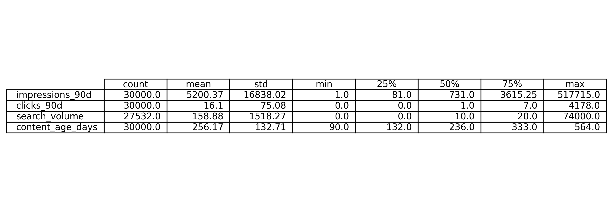
Summary statistics for four core signals — impressions_90d, clicks_90d, search_volume, and content_age_days — across all 30,000 pages in the released dataset.
Interpretation: the gap between each column's mean and its 75th percentile is large across all four signals, which is the first indication that this dataset is heavy-tailed: most pages sit far below the average, while a small number of high-traffic pages pull the mean upward.
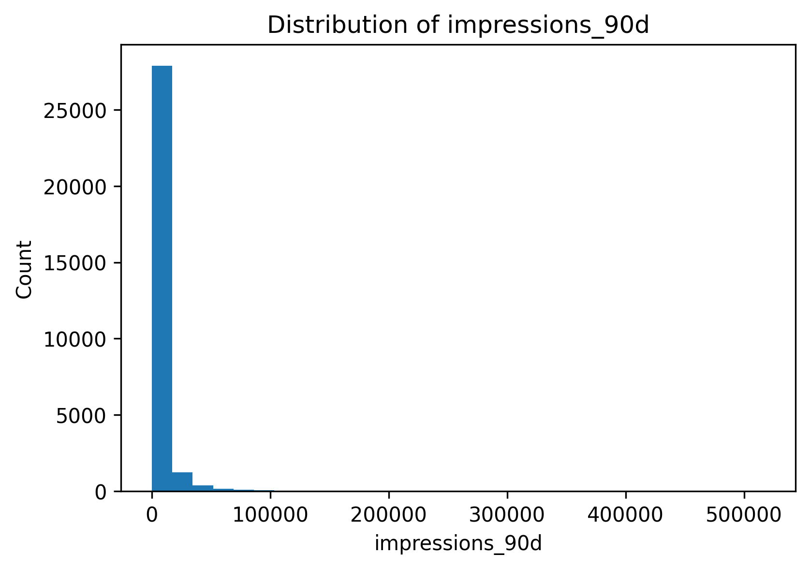
Distribution of impressions_90d across the released dataset.
Interpretation: impressions are strongly right-skewed — the large majority of pages receive a modest number of impressions, while a long tail of pages receives disproportionately more. This skew is why the modeling pipeline treats impressions as a ranking signal rather than assuming a normal distribution.
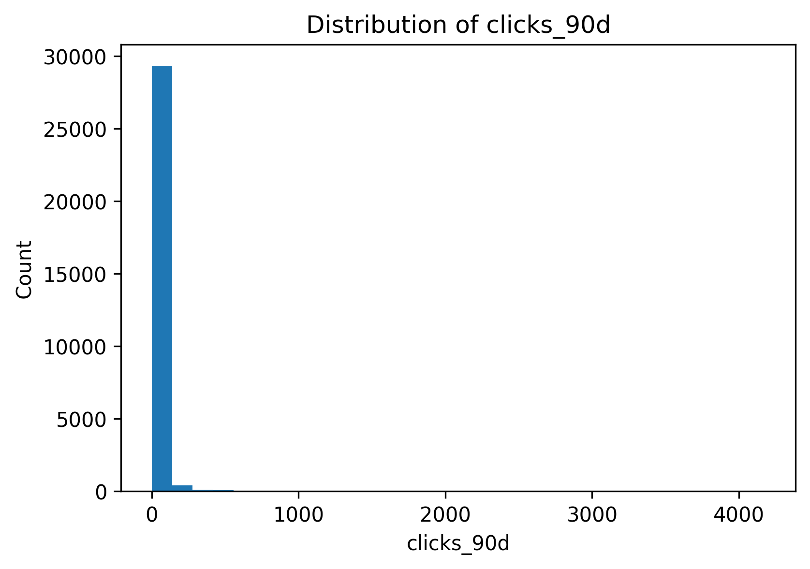
Distribution of clicks_90d across the released dataset.
Interpretation: clicks follow the same shape as impressions, only more extreme — most pages record very few clicks in the 90-day window, consistent with a dataset dominated by long-tail, lower-visibility content rather than a handful of flagship pages.
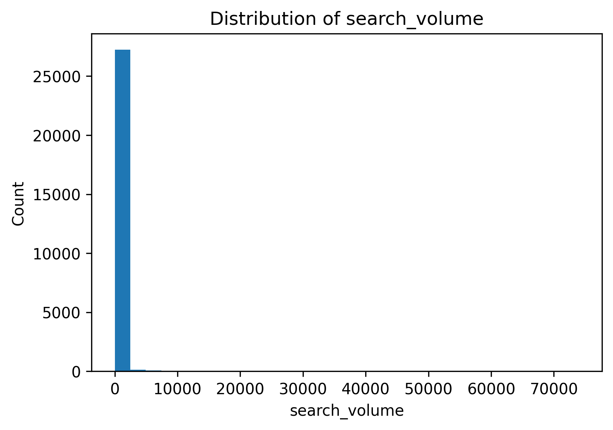
Distribution of search_volume, the estimated monthly demand for each page's target keyword.
Interpretation: keyword demand is concentrated near zero for most pages, with a small number of pages targeting high-volume terms. This mirrors the impressions and clicks distributions, suggesting demand potential is a meaningful, correlated signal rather than noise.
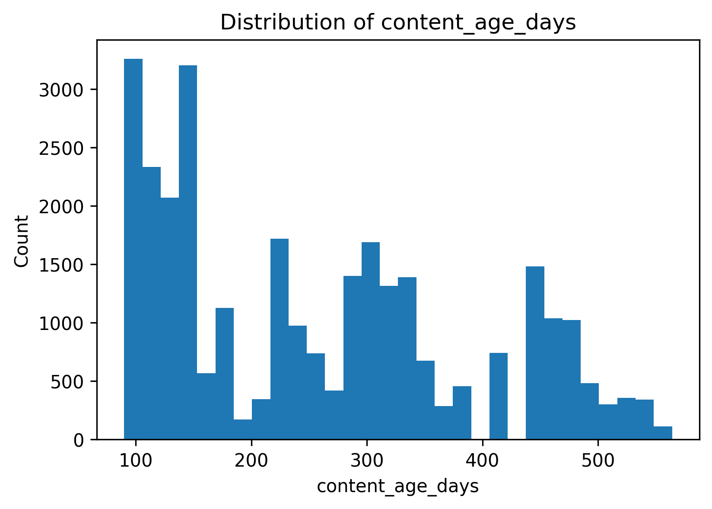
Distribution of content_age_days, the number of days since each page was first published.
Interpretation: unlike the traffic-based signals, content age is multi-modal rather than skewed — visible clusters suggest content was published in batches over time, rather than continuously. Every page in this release is at least 90 days old, consistent with the dataset's focus on already-indexed, evaluable content.
Methodology
A transparent baseline first, honest validation second, and a leakage audit before any result is trusted.
Label definition
The model predicts a binary label already supplied in the starter dataset:
is_declining_label, which is 1 when
trend_direction == "down" (a drop of more than 20% in impressions over
the most recent 30 days versus the prior 30 days) and 0 otherwise.
Within this release, 54.2% of pages carry the positive label — a base rate worth
keeping in mind when reading the accuracy figures in the Results section.
Baseline
Before any model was trained, a transparent rule-based baseline was built. Four signals — impressions, content age, average position, and CTR — are each compared against their dataset-wide median (impressions/age/position above the median, CTR below it counts as a "declining" signal). A page is flagged by the baseline whenever at least three of the four signals point toward decline. The rule is fully readable by a non-technical stakeholder, which is precisely what makes it a fair comparison point.
Model & validation
A Random Forest classifier (200 trees, random_state=42)
was trained on 16 engineered feature groups — 13 numeric signals plus three
one-hot encoded categorical fields. The dataset was split 80/20 into train and
test sets using a stratified random split on the same seed, so the baseline and the
model are compared on the exact same held-out pages.
Pipeline
-
Feature engineering
Thirteen numeric signals plus three categorical fields (one-hot encoded) selected; remaining missing numerics filled with zero.
-
Baseline construction
Transparent majority-vote rule: a page is flagged if at least three of four median-thresholded signals indicate decline.
-
Leakage audit
Label-derived columns, trend fields, and client/content identifiers explicitly removed from the feature set.
-
Model training
Random Forest Classifier fit on the training split; same features available to the baseline logic.
-
Evaluation
Accuracy, precision, recall, and F1 computed on the identical held-out test split for a fair comparison.
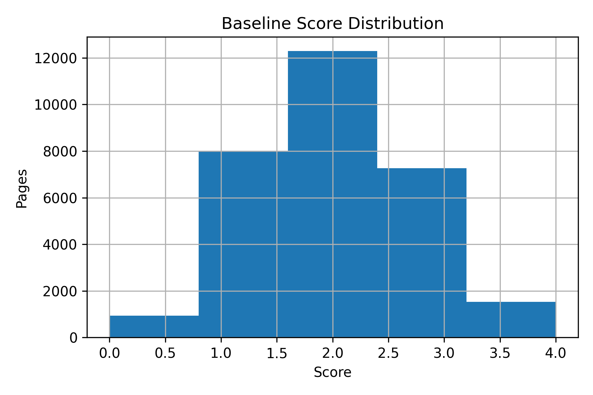
Distribution of the rule-based baseline score across the full dataset.
Interpretation: baseline scores cluster in the lower half of the theoretical 0–4 range, heavily concentrated between 1.0 and 1.5, and tapering off by around 2.4 with almost no pages below 1.0. This continuous score is a separate, exploratory view of the same four signals; the Results section's baseline metrics use a stricter median-threshold, majority-vote version of the rule rather than this continuous score directly.
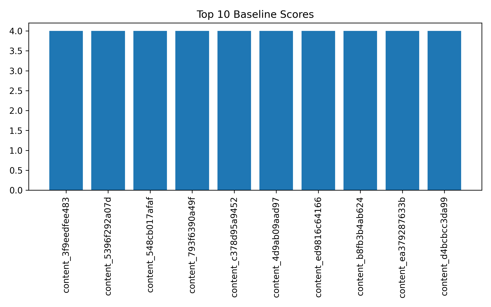
The ten pages with the highest rule-based baseline score, identified by pseudonymous content ID.
Interpretation: the top decile all reach the maximum baseline score of 4.0, meaning the rule alone cannot distinguish priority within this group — a gap the Random Forest model's continuous, learned scoring is better positioned to resolve.
Leakage checks. Label-derived columns, trend columns, and pseudonymous client/content identifiers were excluded before training. This is a page-level stratified split rather than a client-grouped split; because a single client can contribute more than one page, some pages from the same client may appear in both the train and test sets. This is flagged explicitly in Limitations rather than smoothed over.
Results
All numbers below are computed on the same held-out test split (n = 6,000 pages) and should be read against a 54.2% positive base rate.
The Random Forest model was evaluated on the same 20% held-out split used to describe the baseline rule, so the comparison below reflects the same pages under the same conditions.
| Model | Accuracy | Precision | Recall | F1 score |
|---|---|---|---|---|
| Rule-based baseline | 0.4765 | 0.5316 | 0.2875 | 0.3732 |
| Random Forest | 0.6905 | 0.6996 | 0.7518 | 0.7248 |
Both rows are computed on the same held-out split. The Random Forest model outperforms the rule-based baseline on every metric — most notably recall (0.752 vs. 0.288), meaning the baseline misses the large majority of genuinely declining pages that the model successfully flags.
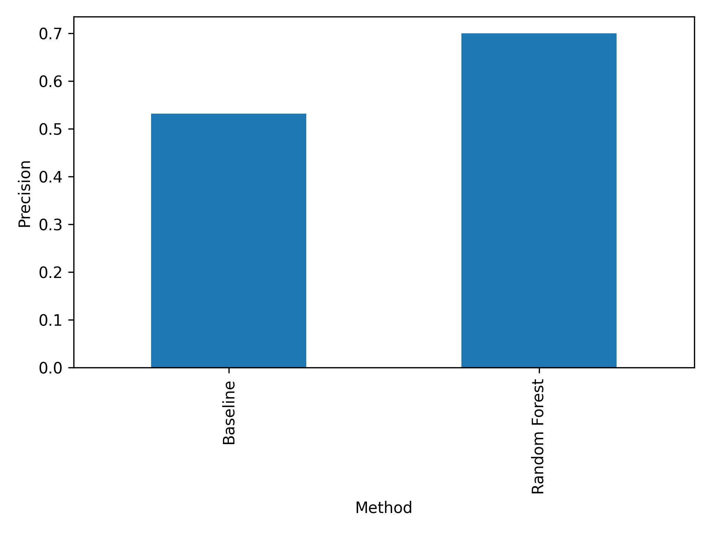
Precision of the rule-based baseline compared with the Random Forest model, evaluated on the same split.
Interpretation: the Random Forest model shows a visibly higher precision bar than the baseline. This suggests that combining multiple search signals through a learned model produces a directionally better-ordered priority list than the fixed-weight rule, though both approaches are evaluated on a single dataset snapshot.
Confusion matrix
| Predicted negative | Predicted positive | |
|---|---|---|
| Actual negative | 1,698 | 1,050 |
| Actual positive | 807 | 2,445 |
n = 6,000 held-out pages. Recall is higher than precision, meaning the model catches most genuinely declining pages, at the cost of also flagging a meaningful share of stable pages for review.
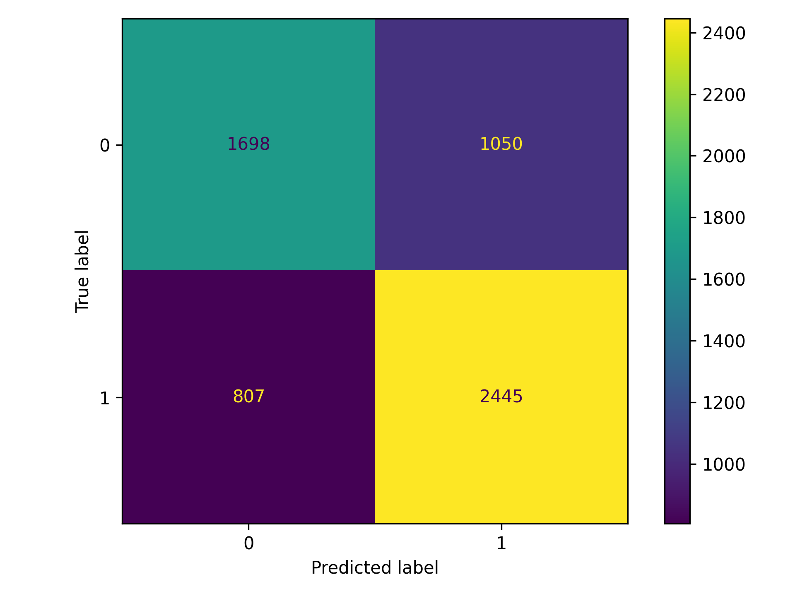
Confusion matrix for the Random Forest classifier on the held-out split.
Interpretation: the darker diagonal cells show that most pages are classified correctly in both directions, while the off-diagonal cells confirm the model is somewhat more prone to false positives (flagging a stable page) than false negatives (missing a declining one) — a conservative-leaning error pattern that fits a review-recommendation tool.
Feature importance
| Feature | Importance |
|---|---|
| impressions_90d | 0.170 |
| avg_position | 0.158 |
| content_age_days | 0.111 |
| char_count | 0.089 |
| word_count | 0.086 |
| scroll_rate | 0.069 |
| ctr | 0.065 |
| clicks_90d | 0.051 |
| search_volume | 0.043 |
| competition | 0.041 |
Showing the ten most predictive of 20 encoded feature columns (13 numeric signals plus one-hot encoded categorical groups); the remaining ten — engagement_rate, cpc, ai_traffic_pct, and individual content-type / intent / competition-level categories — each contribute under 0.035.
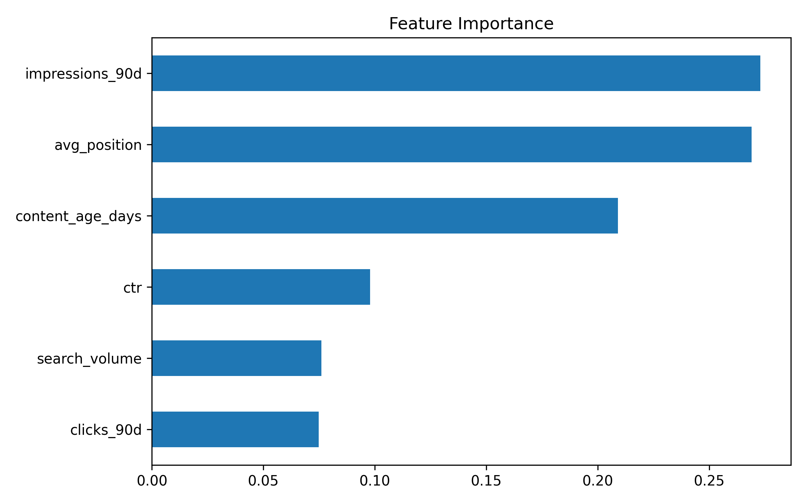
Random Forest feature importance, highlighting the top predictive signals.
Interpretation: impressions, average position, and content age are consistently the strongest predictors, together accounting for just under half of total importance. Content-length signals (char_count, word_count) rank next, ahead of engagement measures like scroll_rate and ctr. This is directionally sensible: pages that are already visible, ranking imperfectly, aging, and thin on content are the pages most associated with a declining trend. Importance should be read as association, not causation.
Error analysis
The model's errors lean toward false positives (1,050 stable pages flagged for review) more than false negatives (807 declining pages missed). For a decision-support tool feeding a human review queue, this is a reasonable trade-off: an unnecessary review costs editor time, while a missed decline can compound before anyone notices. The recall of 0.7518 indicates the model surfaces roughly three out of every four genuinely declining pages within the evaluated split, compared with just 0.2875 for the rule-based baseline on the same pages.
Limitations
What this work can support, and what it explicitly cannot claim.
Observational data. Every signal here is observational search performance, not a controlled experiment. The model finds statistical association, not a causal explanation for why a page is declining.
Anonymized dataset. Anonymization removes contextual factors — topic, competitor activity, editorial history — that may materially influence search performance but are not present in this release.
Generalization. Evaluation is based on a single released dataset snapshot. Performance on future data, other verticals, or other search engines has not been validated and should not be assumed.
Split design. The train/test split is stratified at the page level, not grouped by client. A client-holdout evaluation, recommended in the project's own data dictionary, would be a stronger test of generalization across clients and is left to future work.
Potential bias. Pages with more search history naturally provide more signal; newer or lower-traffic pages may be systematically harder for the model to score confidently.
Decision-support only. The model does not publish, unpublish, or edit content. It ranks review priority; a human remains responsible for every action taken on a page.
Future work
A time-aware validation split (training on earlier periods, testing on later ones), a client-grouped holdout, additional editorial and content-quality signals, and periodic retraining as search behavior shifts would each strengthen the honesty and durability of this model's recommendations.
Ranked Recommendations
The content action playbook — how an editor turns the model's output into a work queue.
The model produces a ranked list of pages most likely to benefit from human review, alongside a reason code explaining why each page was placed at its priority level. These recommendations are intended to support editorial decision-making, not to automate content changes.
-
1
Refresh content immediately
Reason code: high impressions with declining performance. These pages already receive search visibility, so improving them offers the greatest near-term opportunity.
-
2
Review metadata
Reason code: visible pages with a relatively low click-through rate. Title tags and meta descriptions are the first, lowest-effort thing to test.
-
3
Monitor performance
Reason code: a moderate model score. These pages stay under observation and move into the refresh queue only if decline continues in a future reporting period.
-
4
No immediate action
Reason code: strong overall search performance. Continue routine monitoring rather than editing.
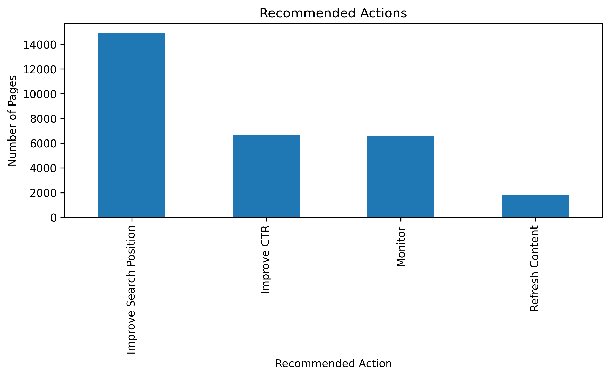
Number of pages assigned to each recommended action across the full 30,000-page dataset.
Interpretation: the largest single group is recommended for search-position or visibility improvements rather than a full content refresh, with smaller groups earmarked for CTR-focused metadata work, ongoing monitoring, and full refresh. Most pages fall short of requiring a full rewrite — a useful finding on its own, since it means editorial effort can concentrate on a manageable minority.
Intended users, human review, and no-go cases
The queue is intended for SEO analysts and content editors making weekly or monthly prioritization calls. A page should not be edited, merged, or removed purely because the model placed it in Priority 1 — a human reviewer should confirm the recommendation against context the model cannot see (recent edits, seasonal topics, or upcoming campaigns) before taking action. Pages with very low search volume or very recent publication dates are reasonable no-go cases for immediate refresh, regardless of model score, and should default to monitoring instead.
Monitoring
Because this evaluation reflects a single 90-day snapshot, the ranked queue should be regenerated on a recurring cadence (for example, each time a new 90-day window closes) rather than treated as a one-time output. Re-running the notebook against a fresh export keeps the recommendations aligned with current search behavior.
Reproducibility
Every number in this paper is produced by the capstone notebook, and can be regenerated from a clean clone of the repository.
| Repository | github.com/muneebulhaq02/flyrank-ml-internship |
|---|---|
| Notebook | work/notebooks/capstone.ipynb |
| Dataset | data/raw/content_refresh_anonymized.csv |
| Random seed | 42 (train/test split and classifier) |
| Model | RandomForestClassifier, 200 estimators, scikit-learn |
Acknowledgments
Built on the FlyRank ML Internship dataset.
With thanks to the FlyRank Machine Learning Internship program for the structured dataset release, methodology guidance, and review process that made this capstone possible.